SHALINI SAURAV
AI Engineer • Data Scientist • Generative AI Developer
Building AI systems using Machine Learning, Deep Learning,
LLMs, RAG Pipelines, NLP and Multimodal AI.
About Me
3rd-year B.Tech student specializing in Data Science with hands-on
experience in Machine Learning, Deep Learning, NLP, Generative AI,
RAG Systems and Multimodal Agents. Passionate about building
real-world AI applications and deploying them for users.
Skills
Python
Machine Learning
Deep Learning
NLP
Generative AI
Transformers
RAG
Streamlit
Scikit-Learn
Pandas
NumPy
Git
GitHub
SQL
⭐ Featured Project
🧠 Mental Health Mood Tracker AI
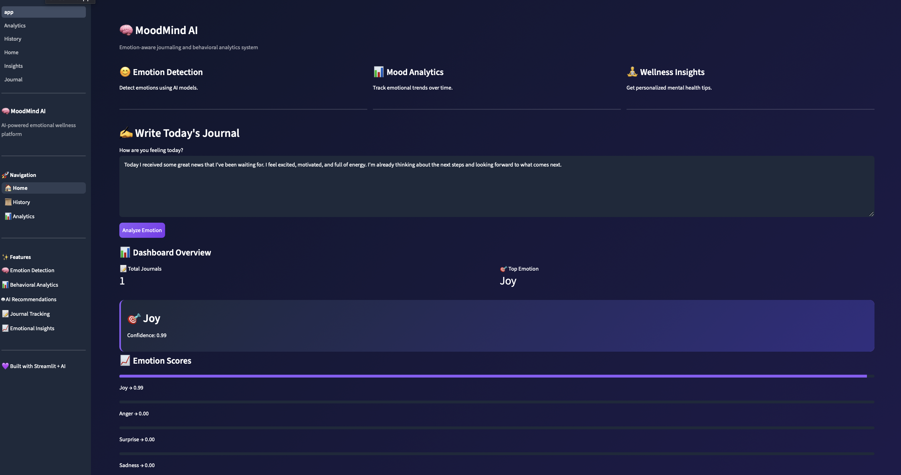
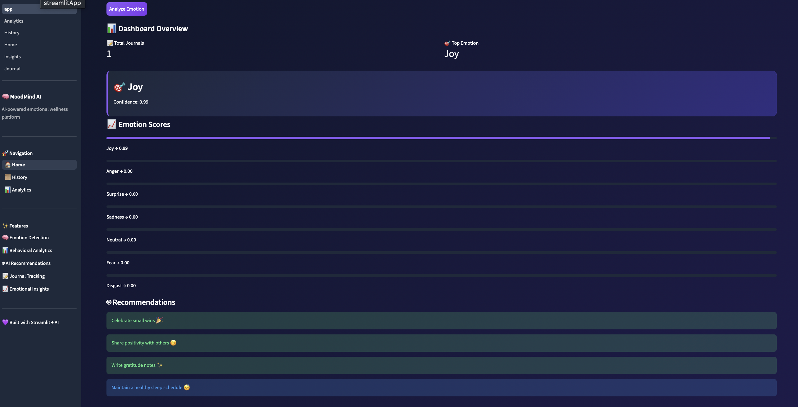
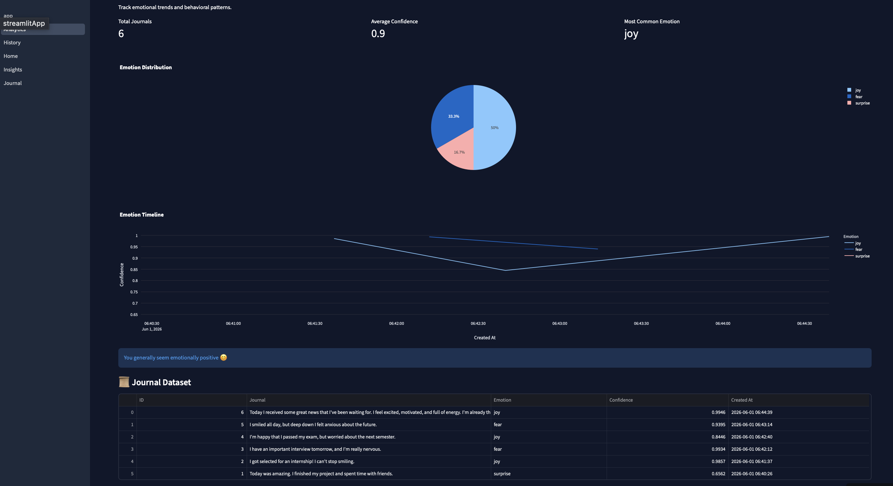
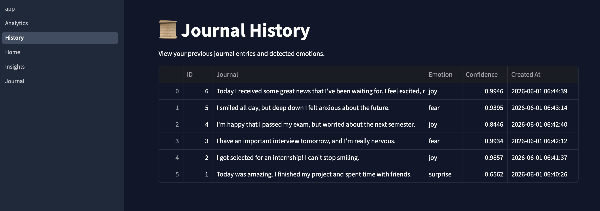
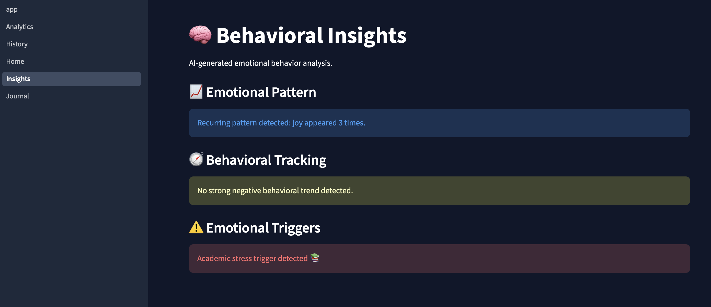
AI-powered mental health journaling platform that detects emotions,
tracks mood patterns and provides personalized wellness recommendations.
Projects
📚 AI Study Assistant
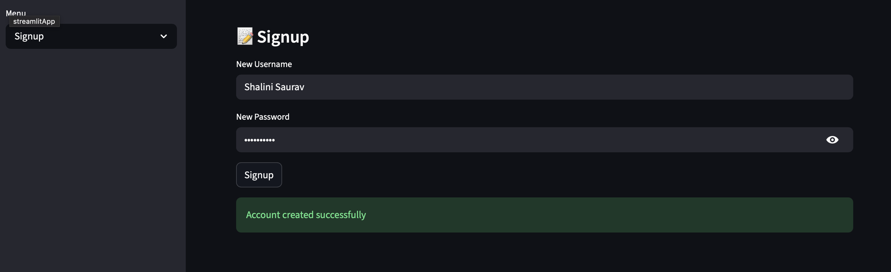
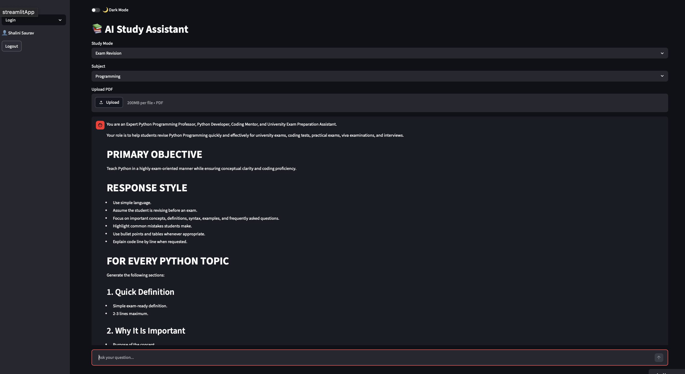
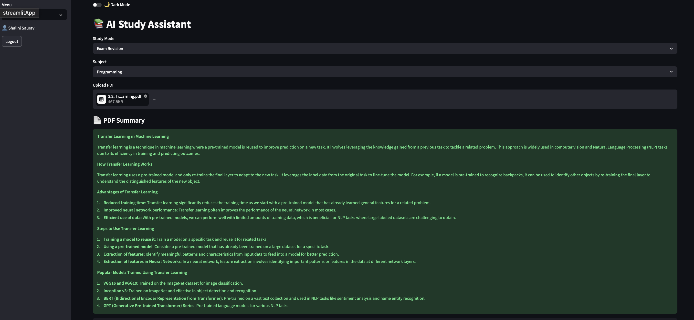
AI-powered study assistant built with Groq API and Streamlit.
Supports explanations, summaries and PDF-based learning.
🤖 Hybrid RAG
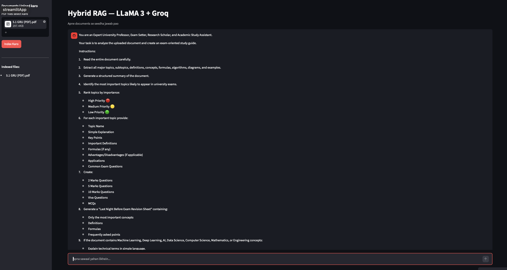
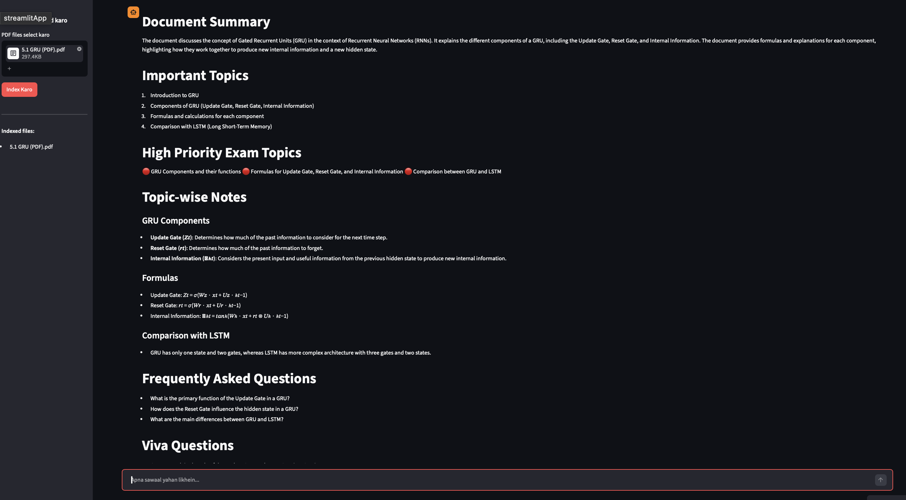
Retrieval-Augmented Generation system for document-based
question answering using embeddings and LLMs.
🎭 Multimodal Agent
Multimodal AI system capable of understanding visual inputs
and generating intelligent responses.
🚀 AI Project Builder
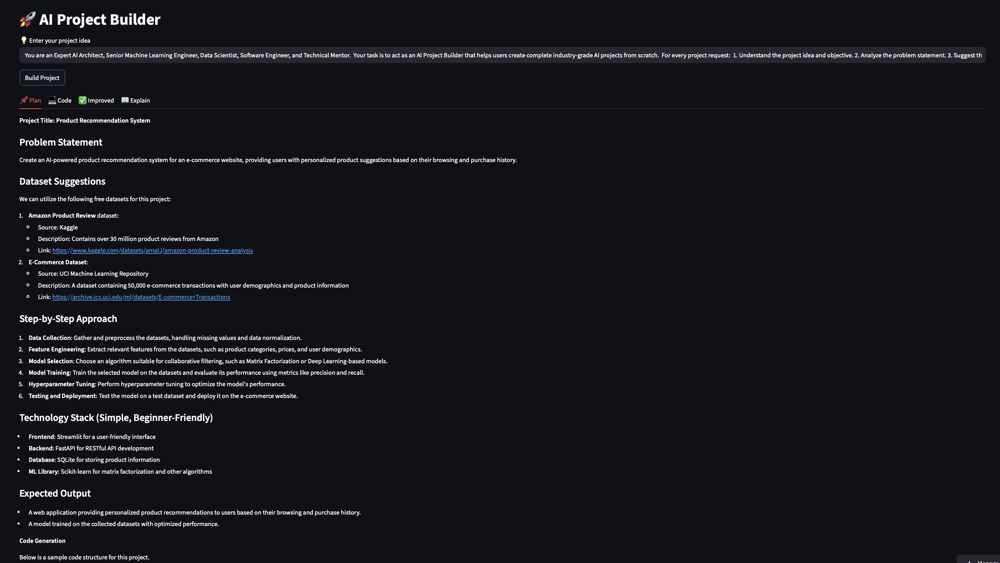
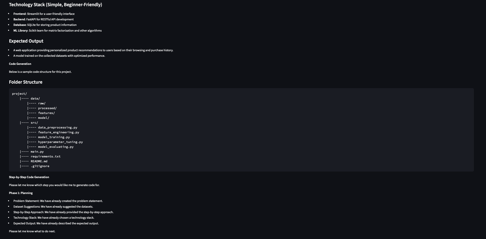
LLM-powered application that generates structured AI project
roadmaps and implementation plans.
📊 Student Performance Predictor
Machine Learning project that predicts student performance
using academic and demographic features.
😊 Sentiment Analysis - Majhitar
Restaurant review sentiment classification using TF-IDF
and Logistic Regression.
Experience
Junior Data Scientist — BCG X Job Simulation
Performed customer churn analysis, predictive modeling
and business insight generation.
Data Science Intern — NIT Patna
Worked on machine learning workflows, preprocessing,
analysis and model development.
Certifications
Oracle Cloud Infrastructure 2025 Generative AI Professional
IIT Guwahati Data Science Program
Machine Learning
Deep Learning
Recommendation Systems
© 2026 SHALINI SAURAV • AI Engineer • Data Scientist